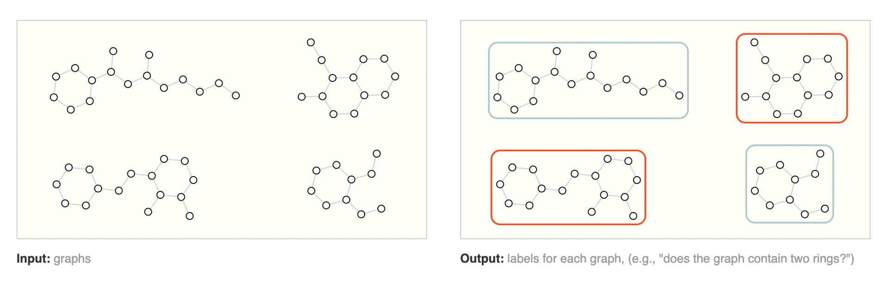
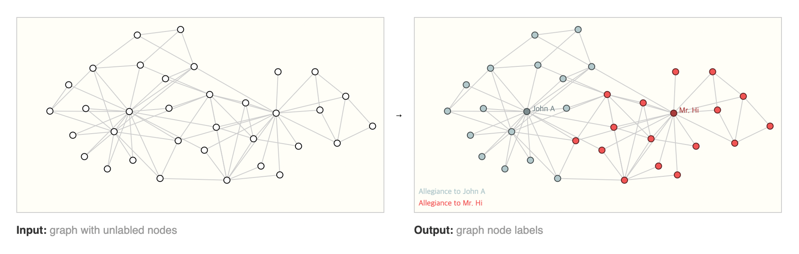
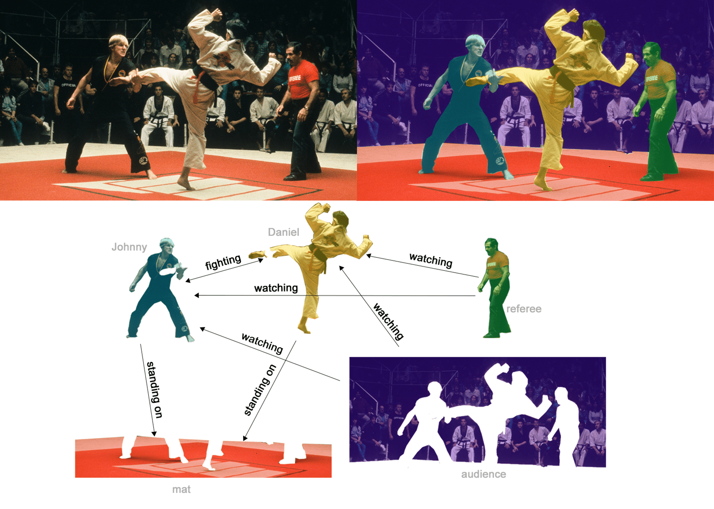
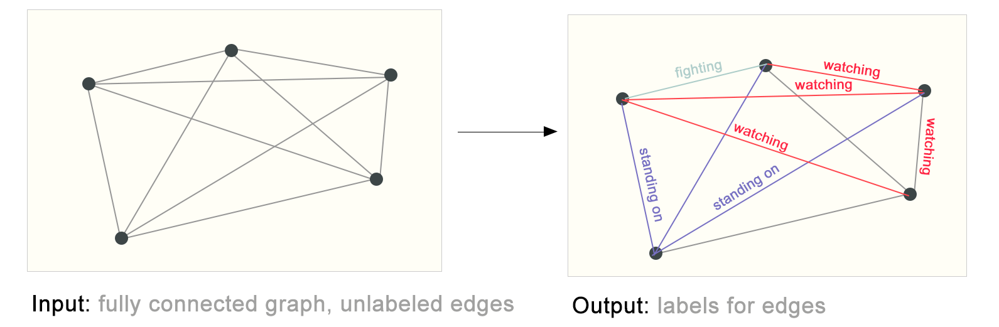
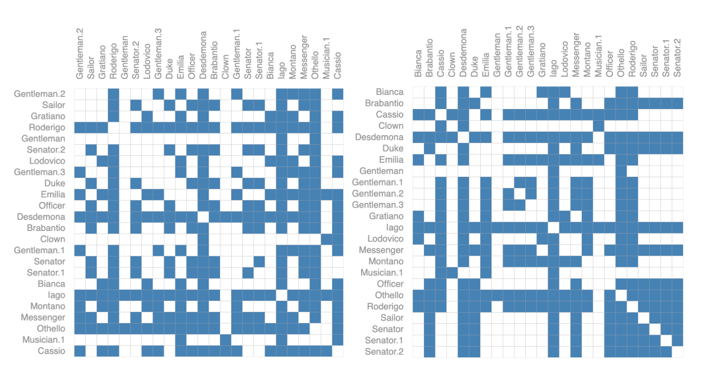
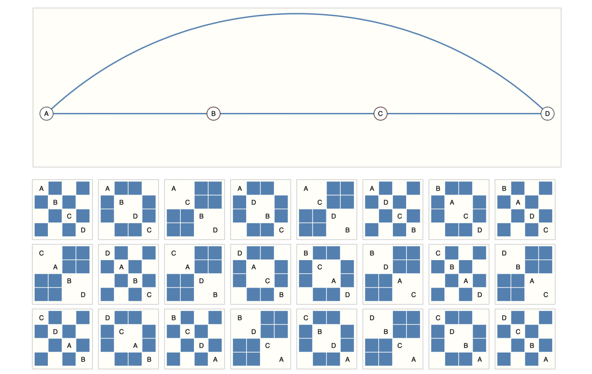

What types of problems have graph structured data?
앞에서 Part 1에서는 그래프의 몇몇 사례를 설명했습니다. 이런 데이터를 활용해서 어떤 작업을 수행할 수 있을까요? 그래프에 대한 예측 작업을 크게 3가지 레벨로 나눌 수 있습니다. 그래프 수준, Node 수준, Edge 수준 이렇게 말이죠.
그래프 수준에서는 전체 그래프에 대해서 단일 속성을 예측합니다. Node 수준에서는 각 Node가 가지고 있는 일부 속성을 예측합니다. Edge 수준에서는 그래프에서 Edge 속성은 어떠한지, 또는 Edge가 존재하는지 여부를 예측합니다. 이 세 가지 수준의 예측 문제는 단일 모델 클래스인 GNN으로 다 해결할 수 있습니다. 먼저 세 가지 수준 별로 구체적인 예시를 통해 조금 더 자세히 살펴보도록 하겠습니다.
Graph-level task
그래프 수준에서의 목표는 전체 그래프의 속성을 예측하는 것입니다. 예를 들면 분자식을 그래프로 표현한 경우에, 분자가 어떤 냄새를 풍기는지 혹은 질병과 관련된 수용체에 결합할지를 예측할 수 있죠.

이러한 접근방식은 라벨을 이미지에 연결하는 MNIST, CIFAR의 이미지 분류 문제와 비슷합니다. 텍스트 데이터로 보자면, 전체 문장의 분위기나 감정을 파악하는 이른바 감정 분석이 비슷한 접근이라고 할 수 있을 겁니다.
Node-level task
Node 수준의 예측 작업은 하나의 그래프 안에서 각 Node의 특성이나 역할을 예측하는 게 주목적입니다.
Node 수준 예측 문제의 대표적인 예는 ’재커리 가라테 클럽 데이터’입니다. 제커리 가라테 클럽 데이터는 클럽 내 정치적 불화로 클럽이 둘로 갈라지면서, 한 곳에만 충성을 맹세한 사람들로 구성된 소셜 네트워크 그래프입니다. 조금 더 스토리를 설명하자면 가라테 강사 Mr. Hi와 관리자 John A 사이에 불화가 생겨 가라테 클럽이 분열됩니다. 회원의 절반 가량이 Mr. Hi를 중심으로 새로운 가라테 클럽을 결성하게 되죠.
여튼 그래프에서 Node는 개별 가라테 수련생을 나타내고, Edge는 가라테 클럽 밖에서의 회원들 간의 상호 작용을 나타냅니다. 여기서 예측문제는 불화 이후 특정 회원이 Mr. Hi와 John A 중 어느 쪽에 충성하게 될지 분류하는 거죠. 이 경우 특정 Node와 Mr. Hi와의 거리, 혹은 John A와의 거리는 충성도와 높은 상관관계가 있습니다.

이미지 분석에 비유를 해보자면, Node 수준의 예측 문제는 이미지 안에서 각 픽셀의 역할에 레이블을 지정하는 이미지 분할(image segmentation)과 유사한 접근입니다. 텍스트 분석에서는 문장 안에서 각 단어의 품사를 예측하는 것과 비슷하죠.
Edge-level task
마지막으로 남은 예측 문제는 Edge 예측입니다.
Edge 수준의 예측의 한 가지 예는 이미지 장면 이해(Image scene understanding)입니다. 딥러닝 모델은 이미지에서 객체를 식별하는 것 외에도 객체 간의 관계를 예측하는 데 사용할 수 있습니다. 이를 Edge 수준 분류라고 표현할 수 있죠. 이미지의 객체(Node)들이 주어지면 Node 가운데 어떤 Node가 Edge를 서로 공유하는지, 혹은 그 Edge의 값이 무엇인지 예측합니다. 각 개체 간의 연결을 발견하기 위해선 그래프를 완전 그래프(Complete graph, 모든 Node간에 Edge가 존재하는 그래프)로 설정한 뒤 예측된 값에 따라 Edge를 잘라내면서 희소 그래프(Sparse graph, Node 개수보다 Edge 개수가 적은 그래프)에 도달할 수 있습니다.


The challenges of using graphs in machine learning
그렇다면 신경망을 통해 위에서 살펴본 다양한 그래프 작업을 해결하려면 어떻게 해야 할까요? 가장 먼저 해야 할 건 신경망과 호환되도록 그래프를 어떻게 표현할지 생각하는 겁니다.
머신러닝 모델은 일반적으로 직사각형이나 격자모양의 배열을 input 값으로 받습니다. 따라서 이를 딥러닝과 호환되는 형식으로 표현하는 방법은 직관적이지 않을 수 있습니다. 그래프에는 Node, Edge, 글로벌 컨텍스트, 연결성 등 예측에 잠재적으로 사용할 수 있는 4개의 정보가 있습니다. 앞의 3개는 비교적 간단합니다. 예를 들어서 Node의 경우 각각의 Node에 인덱스 \(i\)를 할당하고 \(node_i\)의 특징을 Node 특징 행렬(Node feature matrix) \(N\)에 넣을 수 있을 겁니다. 이러한 행렬에는 다양한 예가 있지만 특별한 기술이 들어갈 필요 없이 처리할 수 있습니다.
하지만 그래프의 연결성을 표현하는 건 복잡합니다. 아마도 가장 확실한 방법은 쉽게 텐서화(Tensorisable)할 수 있는 인접 행렬을 사용하는 것일 겁니다. 하지만 이 방법은 몇 가지 단점이 있습니다. 어떤 그래프의 Node 수는 수백만 개에 달할 수 있습니다. 그리고 Node별 Edge 수는 매우 가변적이죠. 이로 인해 인접 행렬은 희소 행렬(Sparse matrix)이 될 가능성이 높아 공간이 비효율적인 경우가 많습니다.
또 다른 문제는 동일한 연결성을 인코딩할 수 있는 인접 행렬이 많다는 겁니다. 동일한 연결성을 나타내지만 다른 모양의 인접 행렬이 심층 신경망에서 동일한 결과를 생성한다는 보장이 없죠. 즉 다시 말해 순열 불변(Permutation invariance, 입력 벡터 요소의 순서와 상관없이 같은 출력을 생성하는 특성)이 아니라는 겁니다. 예를 들어서 앞서 설명한 오셀로 그래프는 아래 두 인접 행렬로 표현할 수 있습니다.

아래 예는 4개의 Node로 구성된 작은 그래프를 표현할 수 있는 모든 인접 행렬을 나타낸 겁니다. 인접행렬의 개수는 \(4! = 24\)개로, 상당한 수가 나옵니다. 오셀로 그래프와 같이 더 큰 데이터에서는 인접 행렬의 수는 엄청나게 늘어날 겁니다.

메모리 효율을 고려한다면 인접성 목록으로 희소 행렬(sparse matrices)을 표현할 수도 있습니다. 인접성 목록의 k번째 항목에는 Node \(n_i\)와 Node \(n_j\) 사이의 Edge \(e_k\)의 연결성을 나타냅니다. 희소 행렬이니만큼 Edge 수가 행렬의 항목 수 \(n^2_{nodes}\)) 보다 훨씬 적을 테고, 그만큼 그래프에서 연결되어 있지 않는 부분에 대한 계산과 저장을 피할 수 있습니다. 예시에서 본 그림에서는 Node, Edge, Global에 스칼라 값을 사용했지만, 대부분의 실제 텐서 표현에서는 그래프의 각 속성당 벡터를 사용합니다.